Part 0: Camera Calibration and Dataset Creation
Part 0.1 & 0.2: Calibration and Data Capture
I calibrated my phone camera using 30-50 images of ArUco calibration grids (3×2 tags, 60mm×60mm each, 90mm horizontal spacing, 75.67mm vertical spacing). Used cv2.calibrateCamera() to compute intrinsics and distortion coefficients.
Then captured 57 images of my object with a single 100mm×100mm ArUco tag, varying angles while maintaining consistent distance.
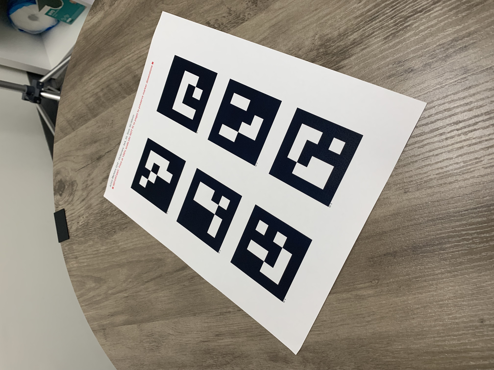
Sample calibration image with ArUco grid (6 tags visible)
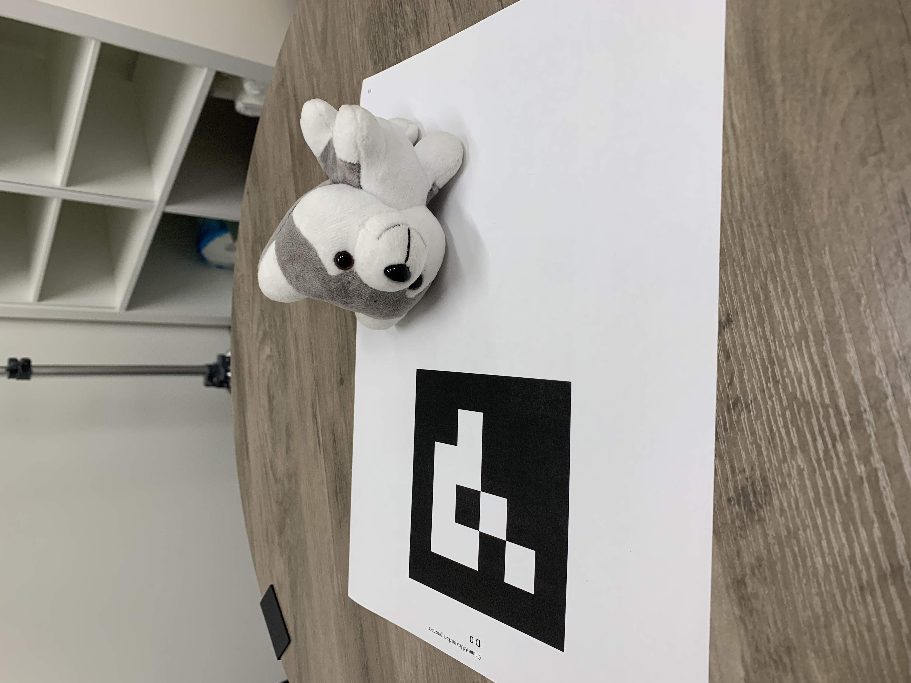
Sample object scan with single ArUco tag
Part 0.3: Camera Pose Estimation
For each image, I used cv2.solvePnP() with detected ArUco corners to estimate camera pose. Inverted the world-to-camera transformation to get c2w matrices for NeRF training.
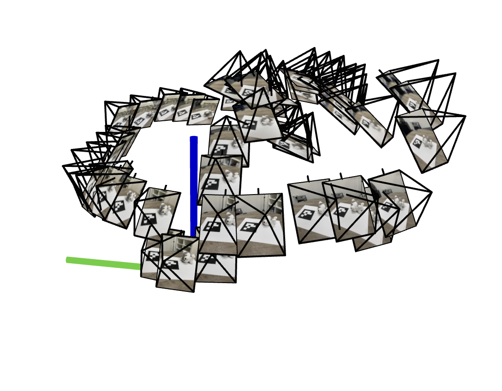
Viser visualization - camera frustums form dome pattern around object
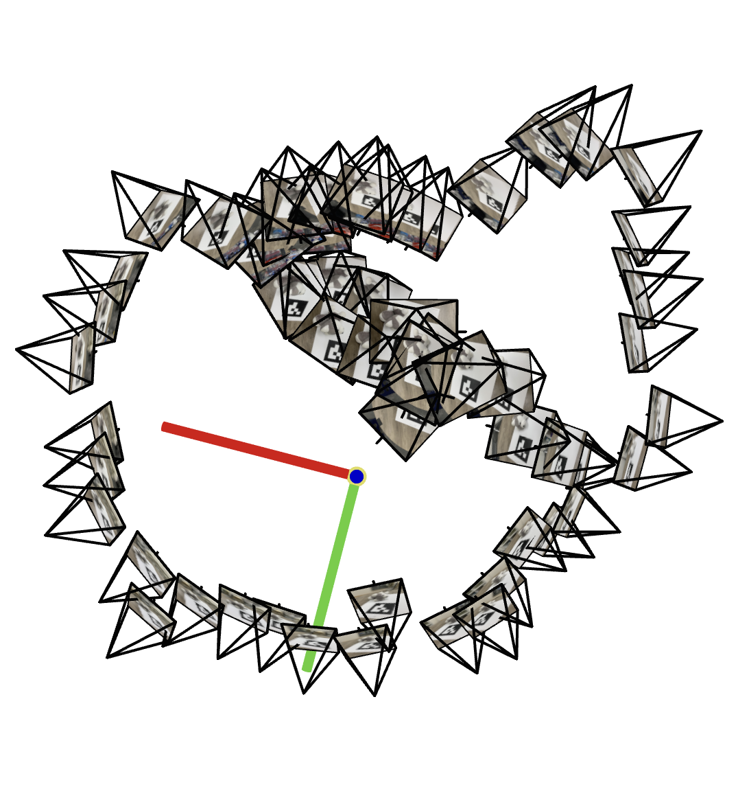
Alternative view showing spatial distribution of camera poses
Part 0.4: Undistortion and Dataset Creation
Applied cv2.undistort() to remove lens distortion. Used cv2.getOptimalNewCameraMatrix() with alpha=0 to crop black boundaries, then adjusted principal point for the crop offset. Split into 70% train, 15% val, 15% test and saved as my_data.npz.
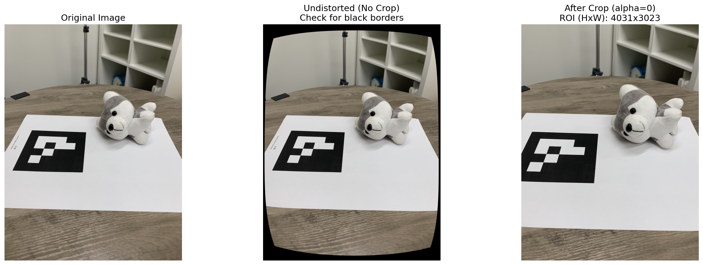
Undistortion: Original → Undistorted (black borders) → Cropped (final)
Part 1: Fit a Neural Field to a 2D Image
Architecture
Implemented MLP with sinusoidal positional encoding mapping (u,v) → (r,g,b). PE expands 2D input to 2*(2*L+1) dimensions.
class NeuralField2D(nn.Module):
def __init__(self, L=10, hidden_dim=256, num_layers=3):
input_dim = 2 + 2 * 2 * L # = 42 for L=10
layers = [nn.Linear(input_dim, hidden_dim), nn.ReLU()]
for _ in range(num_layers - 1):
layers += [nn.Linear(hidden_dim, hidden_dim), nn.ReLU()]
layers += [nn.Linear(hidden_dim, 3), nn.Sigmoid()]
self.network = nn.Sequential(*layers)
Training: Adam lr=1e-2, 10k pixels/iter, 2000 iterations
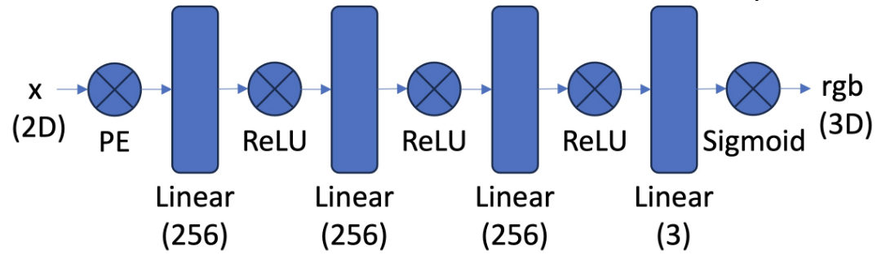
Neural field architecture: Positional encoding → 3 hidden layers (256 width) → RGB output
Results
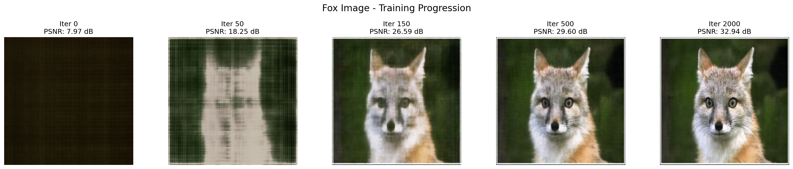
Fox training progression (0, 50, 150, 500, 2000 iters). Coarse structure emerges quickly, fine details refine gradually. Final PSNR: ~33 dB.
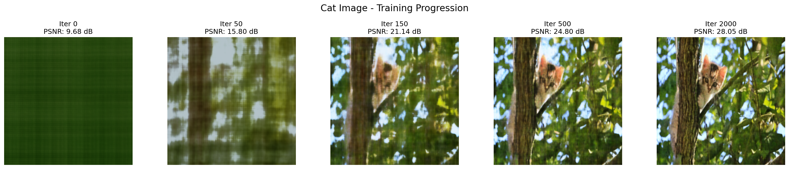
Cat training progression (my image). Final PSNR: ~30 dB.
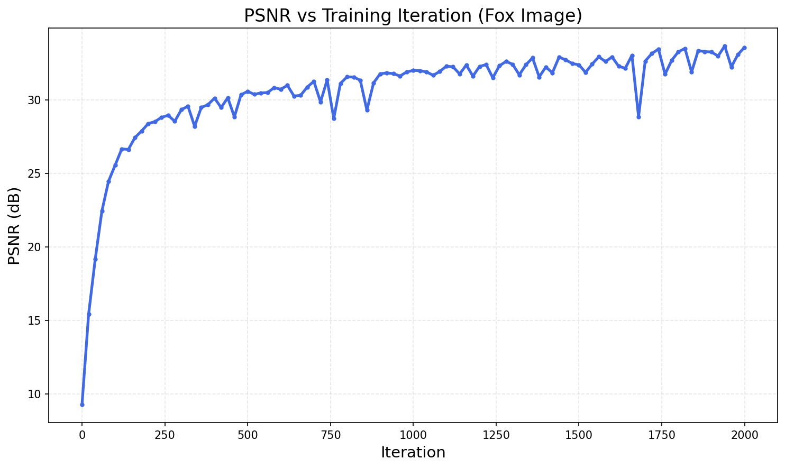
PSNR training curve for fox image. Rapid improvement in first 500 iterations, then gradual refinement reaching ~33 dB.
Hyperparameter Study
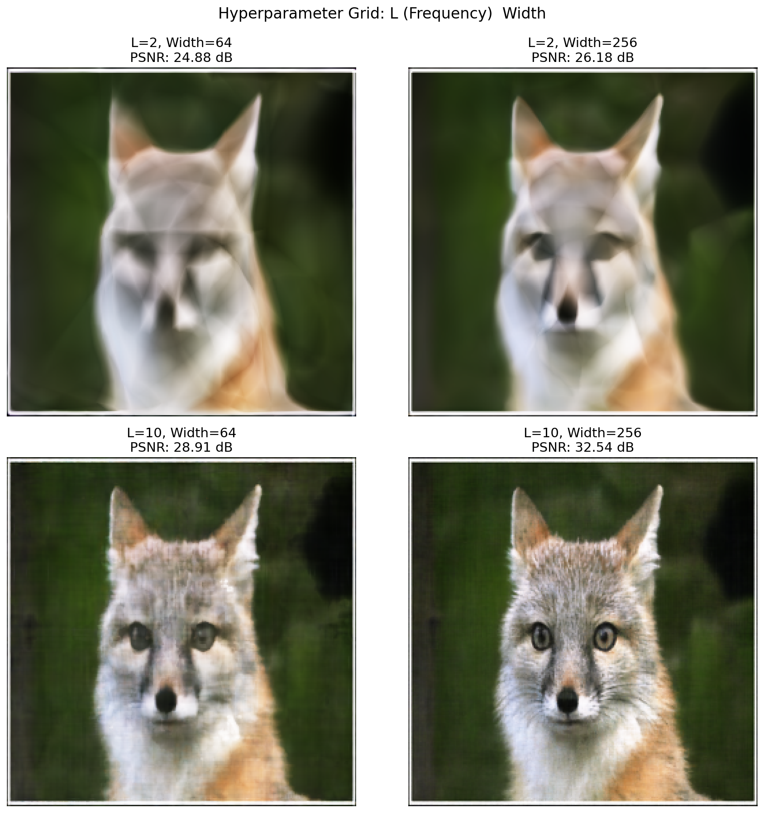
L × Width grid: (L=2,W=64) blurry, (L=2,W=256) smooth, (L=10,W=64) limited detail, (L=10,W=256) best quality. Higher L captures high-frequency details, wider network increases capacity.
Part 2: Neural Radiance Field (NeRF)
Implementation Overview
Part 2.1 - Create Rays: Implemented transform(c2w, x_c), pixel_to_camera(K, uv, s), and pixel_to_ray(K, c2w, uv) to convert pixels to 3D rays with origins and normalized directions.
Part 2.2 - Sampling: Sample 64 points per ray between near/far bounds with random perturbation during training to prevent overfitting.
Part 2.3 - Dataset: Pre-computed ~4M rays from 100 training images for efficient batch sampling.
Part 2.4 - NeRF Network: MLP with position encoding (L=10) and direction encoding (L=4). Outputs density from position, RGB from position+direction.
Part 2.5 - Volume Rendering: Discrete volume rendering using alpha compositing with transmittance.
Dataset
Lego (200×200): 100 train, 10 val, 60 test poses. Focal=138.89.
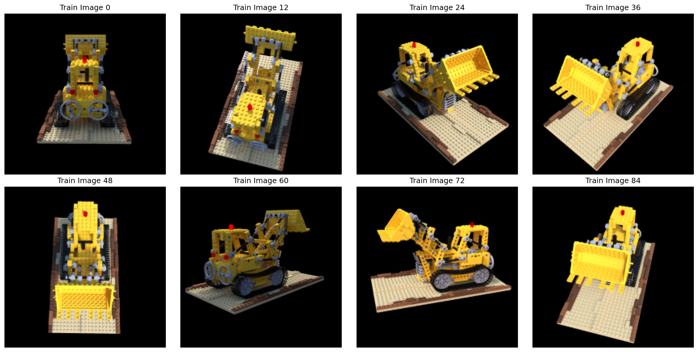
Sample training images from multiple viewpoints
Part 2.1: Ray Generation
Implemented coordinate transformations:
transform(c2w, x_c): Camera to worldpixel_to_camera(K, uv, s): Pixel to camera coordinatespixel_to_ray(K, c2w, uv): Generate ray origin and normalized direction
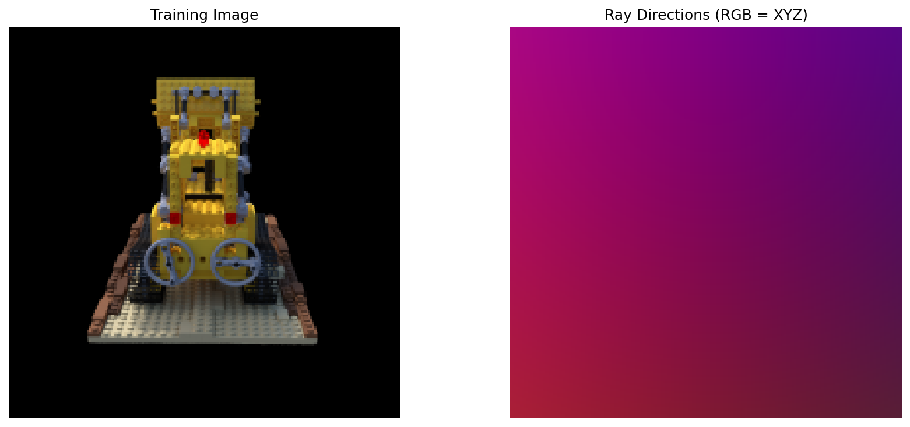
Ray directions visualization. Each pixel maps to a ray from camera center, colored by XYZ direction.
Part 2.2 & 2.3: Sampling and Dataset
Sampled 64 points per ray between near=2.0 and far=6.0 with random perturbation during training. Pre-computed ~4M rays (100 images × 200×200) for efficient batch sampling.
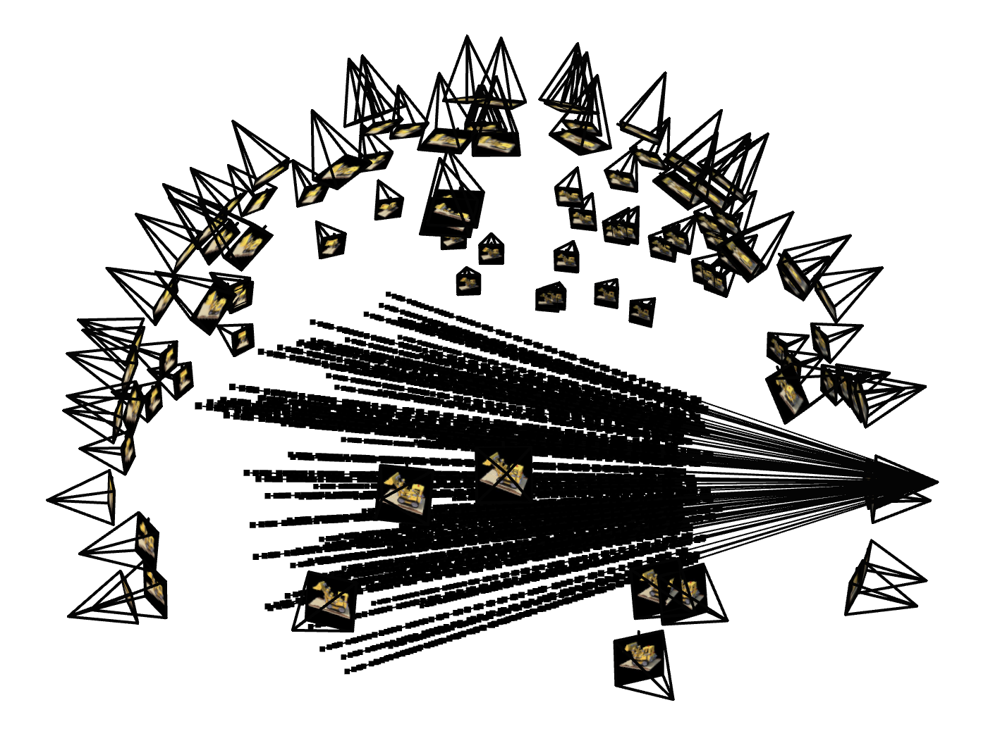
Viser visualization: Rays from a single camera with sampled points
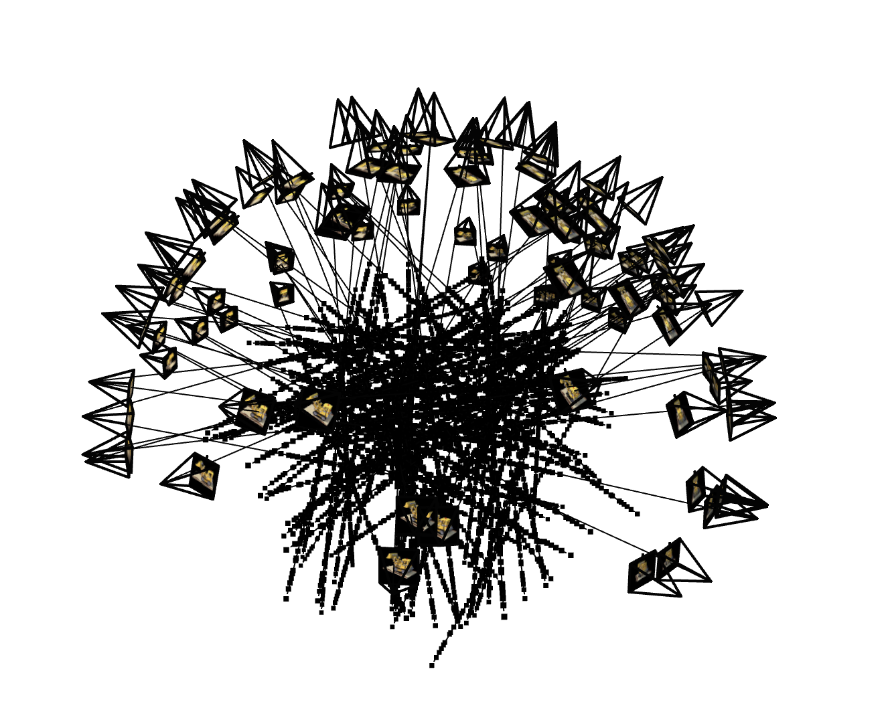
Viser visualization: 100 randomly sampled rays from multiple cameras
Part 2.4 & 2.5: NeRF Architecture and Volume Rendering
Position Encoding: L_pos=10 → 3*(2*10+1) = 63 dimensions
Direction Encoding: L_dir=4 → 3*(2*4+1) = 27 dimensions
Network Architecture:
Position → Density (σ) + [Position+Direction] → Color (RGB)
Volume Rendering Equation:
$$\hat{C}(\mathbf{r})=\sum_{i=1}^N T_i\left(1-\exp \left(-\sigma_i \delta_i\right)\right) \mathbf{c}_i, \text{ where } T_i=\exp \left(-\sum_{j=1}^{i-1} \sigma_j \delta_j\right)$$
where \(\mathbf{c}_i\) is the RGB color at sample \(i\), \(T_i\) is the transmittance (probability of ray reaching sample \(i\)), and \(1 - \exp(-\sigma_i \delta_i)\) is the alpha (probability of ray terminating at sample \(i\)).
Training: Adam lr=5e-4, 10k rays/iter, 2000 iterations
Training Results
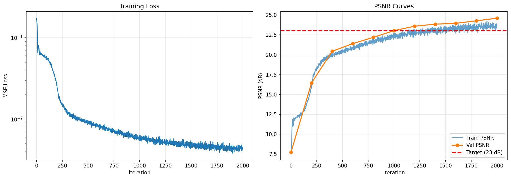
Training curves. Left: MSE loss decreases steadily. Right: PSNR curves - validation reaches ~24 dB, exceeding 23 dB requirement ✓
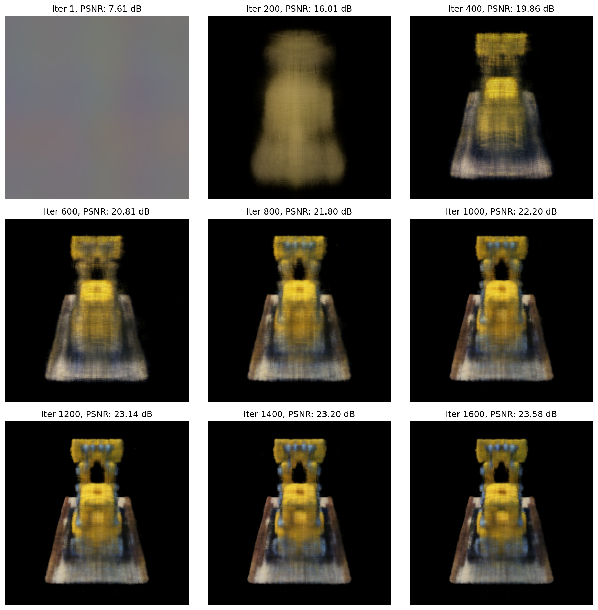
Training progression (1-2000 iters). Shape emerges by iter 200, details refine through iter 2000.
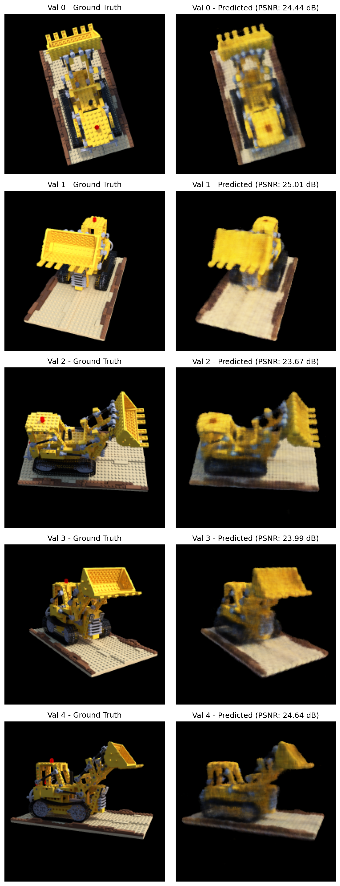
Validation: Ground truth (left) vs predictions (right). PSNR 23-26 dB across views.
Novel View Synthesis
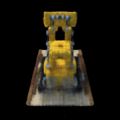
360° novel view synthesis (60 test poses). Smooth, consistent geometry and appearance.
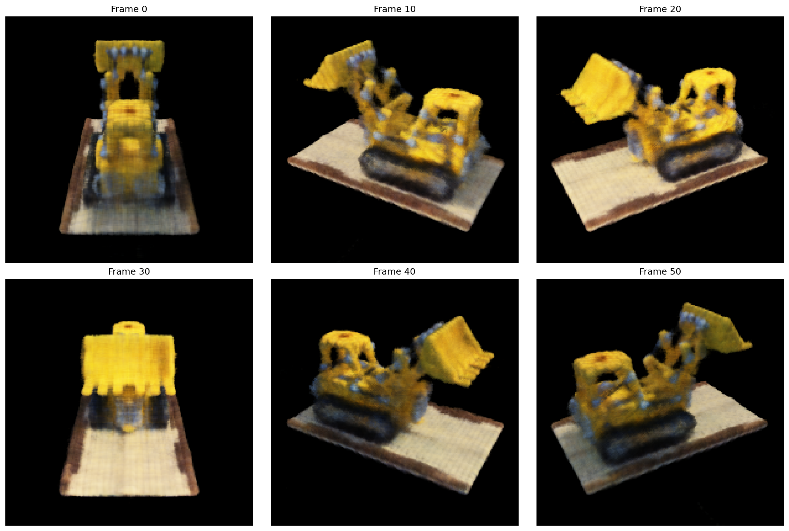
Sample frames showing temporal consistency
Part 2.6: NeRF on My Own Data
Key Changes
Scene bounds: Changed near=2.0, far=6.0 to near=0.02, far=0.5 (object captured at close range)
Training config: Batch size 4096 (fewer images), 5000 iterations (real-world complexity), lr=5e-4
Memory: Implemented lazy ray loading instead of pre-computing all rays (57 images × H×W)
Results
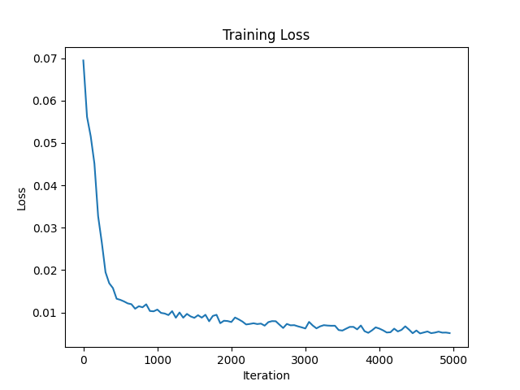
Training loss over 5000 iterations - steady decrease despite real-world challenges
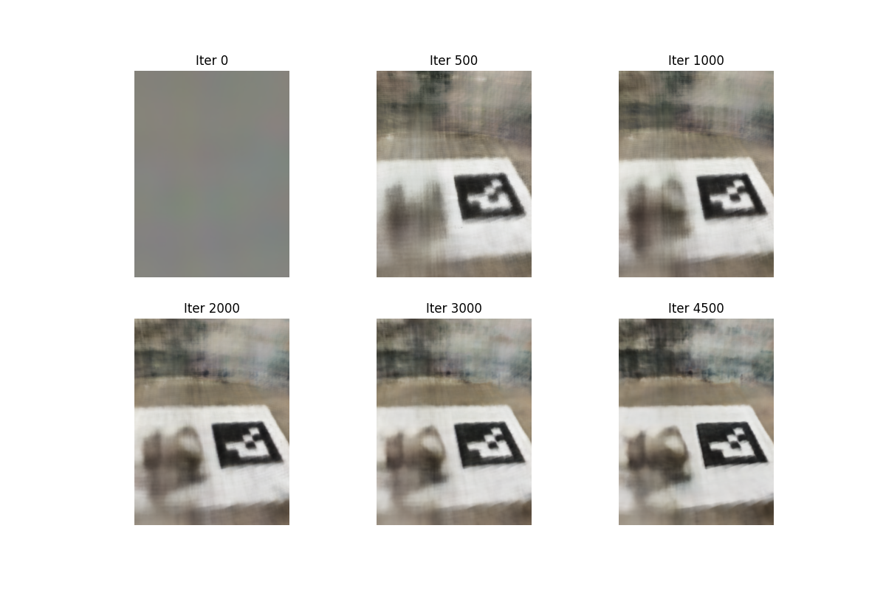
Training progression (0, 500, 1000, 2000, 3000, 4500). ArUco tag emerges first, object follows.

360° novel view synthesis (30 frames). Successfully synthesizes unseen viewpoints.
Discussion
Code/Hyperparameter Changes from Part 2 (Lego):
1. Dataset Loading:
- Changed from
lego_200x200.npz to my_data.npz
- Captured 57 images, 39 used for training (after 70-15-15 split) vs Lego's 100
2. Scene Scale Adjustment (Critical):
NEAR = 0.02 (changed from 2.0), FAR = 0.5 (changed from 6.0)- Reason: Object captured at much closer range than Lego scene
- Without this, all sample points would be outside the actual scene
3. Training Configuration:
BATCH_SIZE = 4096 (reduced from 10000) - fewer images require smaller batch to prevent overfittingN_ITERS = 5000 (increased from 2000) - real-world complexity needs more iterations
4. Memory Optimization:
- Implemented
RaysDatasetLazy instead of precomputing all rays
- Reason: RAM limitations - precomputing 39 images × (H×W) rays caused crash
- Trade-off: Slightly slower but necessary for execution
5. Volume Rendering Function:
- Rewrote
volume_render() to handle batch dimensions correctly
- Fixed tensor shape mismatches between sigma and delta calculations
6. Novel View Camera Path:
START_POS = c2ws_train[0][:3, 3] (based on actual training camera)NUM_SAMPLES = 30 frames (reduced from 60 for faster rendering)
Observations:
- Training Behavior: Convergence slower than Lego due to real-world complexity, background clutter, and lighting variations
- ArUco tag learned first (high contrast), then surrounding context
- Results Quality: Recognizable object with some blur/artifacts (expected with limited training images)
- Quality heavily dependent on Part 0 calibration accuracy
Challenges Encountered:
- RAM constraints → Solved with lazy loading
- Scene scale mismatch → Solved by adjusting near/far bounds
- Long rendering times → Mitigated by reducing frame count
- Tensor dimension errors → Fixed volume rendering implementation